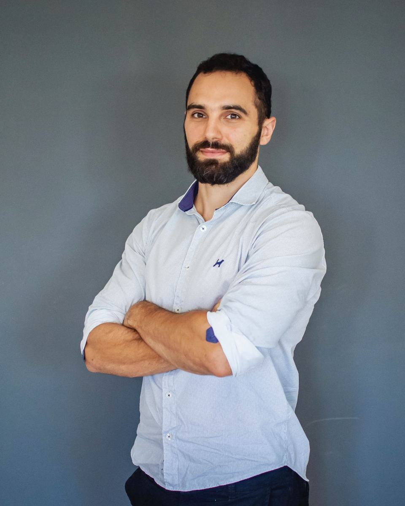
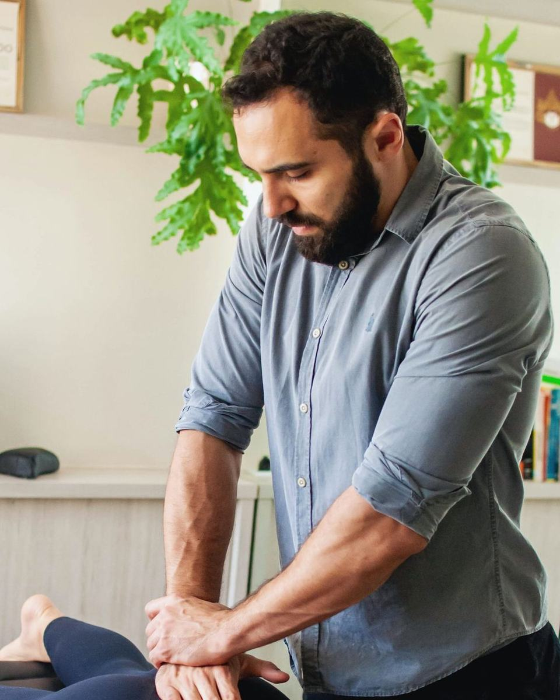
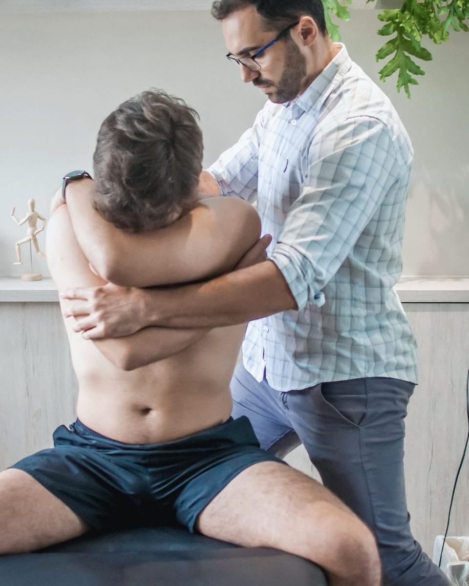
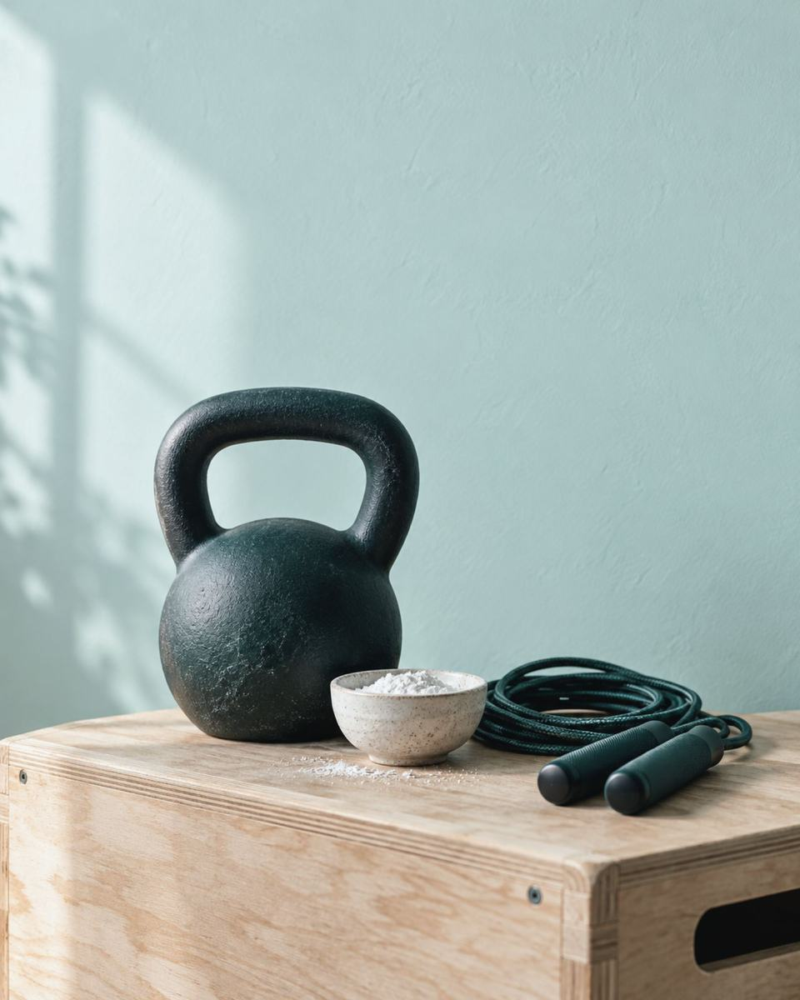
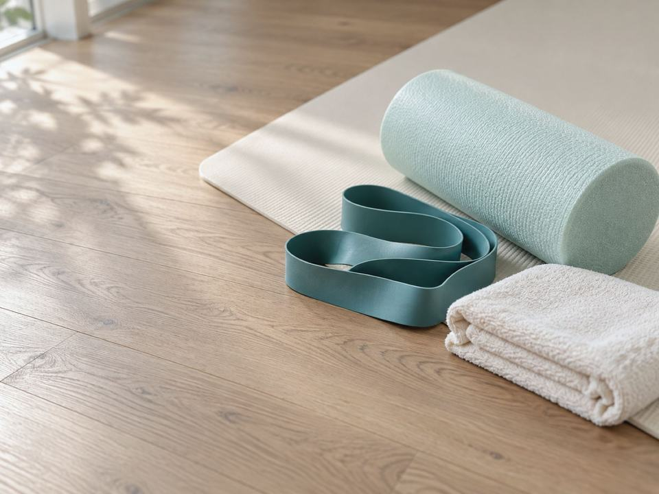
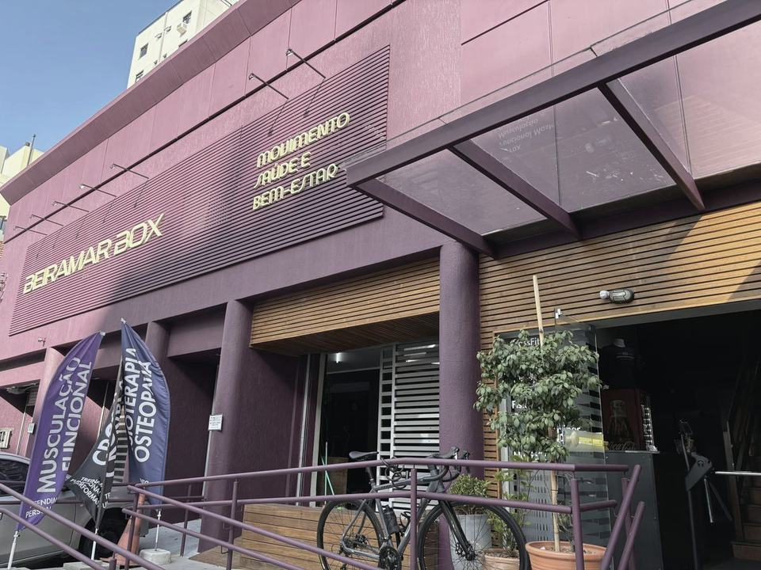

Guilherme de Vasconcelos Botelho
Fisioterapeuta · CREFITO-10/155758-F
Fisioterapia e osteopatia no Centro de FloripaChamar no WhatsApp
Guilherme de Vasconcelos Botelho · Fisioterapeuta · CREFITO-10/155758-F
Se você convive com dor na lombar, nas costas, no pescoço ou no ombro, ou se travou no treino, a avaliação começa por entender o que está acontecendo. Guilherme Botelho é fisioterapeuta e atua com osteopatia e terapia manual no Beiramar Box, no Centro de Floripa.
Recursos manuais e não invasivos, e o exercício certo pra você levar.
Fisioterapia e osteopatiaSeg a sex, 8h às 18h
CREFITO-10/155758-FFisioterapeuta, registro ativo
Beiramar BoxR. Visc. de Ouro Preto, 264, Centro
Seg a sex8h às 18h
Acessívelentrada, banheiro e estacionamento
WhatsApp(48) 98403-4010
Onde dói
Toque na região do corpo. Para cada uma, situações comuns e o que a avaliação olha primeiro.
A lombar que pega ao levantar da cadeira ou trava depois de um treino pesado, até virar uma dor que só piora.
A avaliação olha como você se abaixa e levanta peso, e o que o quadril faz junto com a coluna.
Conversar sobre dor lombarDor ao virar a cabeça para dar ré no carro, ou o pescoço que amanhece travado depois de um dia inteiro no computador.
A avaliação olha a cervical junto com a coluna torácica.
Conversar sobre dor no pescoçoO braço que não sobe até o armário, ou a dor que aparece no supino e na barra.
A avaliação mede até onde ele vai e em que ponto a dor aparece.
Conversar sobre dor no ombroO ponto entre as escápulas que incomoda depois de horas sentado, as costas duras que pedem para destravar. A avaliação olha quanto a coluna torácica gira e se estende quando você se mexe.
Conversar sobre dor nas costasDor ao correr, ao subir escada ou no fundo do agachamento. A avaliação olha o quadril em movimento, com o peso apoiado numa perna só.
Conversar sobre dor no quadrilDor no pé ou nos dedos ao caminhar, ou aquela que deixa você sem conseguir correr. A avaliação olha o pé e o tornozelo enquanto você caminha.
Conversar sobre dor no péO que trato
Abra o caso que mais parece com o seu para ver o que a avaliação procura e como o tratamento se organiza.
Dor crônica na lombar ou crise que volta sempre no mesmo lugar.
A avaliação procura a causa do problema antes de qualquer técnica. O tratamento junta terapia manual e, quando indicado, manipulação da coluna. Depois vem o exercício, porque o corpo precisa se fortalecer pra não voltar ao mesmo padrão que causou a dor.
Conversar sobre dor lombarPescoço que trava e tensão que sobe com o dia no computador.
A terapia manual busca devolver movimento ao pescoço. A orientação de posturas e pausas vai para o seu dia de trabalho.
Conversar sobre o pescoçoO braço que não sobe, ou que dói no treino de empurrar e puxar.
As mãos trabalham o ombro e a escápula. Os exercícios de força entram em seguida, com carga que sobe devagar.
Conversar sobre o ombroQuadril que dói no agachamento e puxa a lombar junto.
A lombar entra na avaliação junto com o quadril. Terapia manual para a mobilidade e exercício para sustentar o movimento no dia a dia e no treino.
Conversar sobre o quadrilMusculação, CrossFit, corrida ou jiu-jitsu, e um músculo que trava ou uma dor que aparece com a carga.
O consultório fica dentro de um box, perto de quem treina. A avaliação olha o movimento do treino e a progressão de carga. O tratamento manual vem junto com o ajuste do treino: aumentar a carga aos poucos, sem saltos.
Conversar sobre treinoQuando a dor não fica num lugar só ou volta depois de um tempo.
A osteopatia avalia como coluna, quadril e pés compensam uns aos outros, numa visão sistêmica da saúde. O tratamento usa as mãos onde dói e onde o corpo está compensando.
Conversar sobre osteopatiaosteopatia
[os·te·o·pa·ti·a]
substantivo feminino
Como eu trabalho
Antes de qualquer técnica, vem a conversa: quando a dor começou e o que a piora no seu dia. Depois, testes de movimento. A ideia é você sair da avaliação sabendo o que está acontecendo.
Aí as mãos entram onde fazem sentido: terapia manual e, quando indicado, manipulação da coluna. Cada técnica é explicada antes, para você saber o que está sendo feito e por quê.
A parte que fica com você é o exercício. Força e movimento, treinados com você, pro corpo não voltar ao mesmo padrão que causou a dor.

Fisioterapeuta · CREFITO-10/155758-F
Sobre
Sou fisioterapeuta e atuo com osteopatia e terapia manual. Escolhi usar as mãos e o raciocínio para tratar as pessoas que sofrem com dor. Recebo muita gente que vive o que eu vivi: dor que parece não ter solução.
Por isso começo sempre por avaliar bem e explicar cada detalhe do tratamento. Atendo no Beiramar Box, no Centro, e boa parte de quem chega treina. Quem não treina também é bem-vindo: a dor da cadeira e do computador é tão comum quanto a do agachamento.


Como funciona
Conte o que está sentindo, onde dói e há quanto tempo. O horário é combinado ali, de segunda a sexta.
Uma conversa sobre a dor e a sua rotina, e testes de movimento para entender o que está acontecendo.
Terapia manual e outros recursos manuais e não invasivos, cada um explicado antes de ser feito.
Você recebe exercícios e orientações de postura e de carga para seguir entre as sessões.
Dúvidas
Se você está pesquisando bastante antes de escolher, aqui estão endereço, horários, convênio e como funciona.

Pelo WhatsApp ou por ligação, no (48) 98403-4010. Conte o que está sentindo e combine o horário.
Chamar no WhatsAppDentro do Beiramar Box, na R. Visconde de Ouro Preto, 264, Centro de Florianópolis. Entrada, banheiro e estacionamento são acessíveis para cadeira de rodas.
Como chegarSegunda a sexta, das 8h às 18h. Sábado e domingo, fechado.
Um jeito de tratar com as mãos que procura a origem da dor além do ponto que dói. A manipulação da coluna só entra quando indicada, e nada é feito sem explicar antes. Aqui ela vem junto com o exercício.
Sim: musculação, CrossFit, corrida e jiu-jitsu. O consultório fica dentro de um box, e a orientação inclui como voltar a subir a carga. Quem não treina também é atendido.
Depende do que a avaliação mostrar. O plano é conversado com você depois da avaliação, com o exercício como parte dele.
Convênio e pedido médico são combinados direto com o Guilherme. Pergunte pelo WhatsApp antes de agendar.
Perguntar pelo WhatsAppPara quem treina
Três cuidados que eu repito para quem treina, no box ou fora dele.
Suba a carga aos poucos, sem saltos. Treino bom é progressivo, não excessivo.
Dor que aparece sempre no mesmo movimento pede avaliação antes de mais carga.
Fortalecer faz parte do tratamento. O corpo precisa ganhar força pra não voltar ao mesmo padrão que causou a dor.

Agendar
Mande uma mensagem dizendo o que está sentindo e há quanto tempo. A avaliação é marcada de segunda a sexta, entre 8h e 18h.
Entrada, banheiro e estacionamento acessíveis
Como chegarHorários
